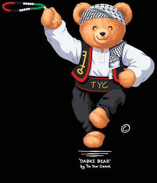

Trade Mark Journal No.2025/037 12 September 2025
UK00004257137 31 August 2025 (16,18,25)

The bear is performing a cultural 'dabke' dance. Note his stance / position of hands, arms and legs.
- Class 16
- Stationery; Envelopes [stationery]; Paper stationery; Printed stationery; Stickers [stationery]; Office stationery; Stencils [stationery]; Wrappers [stationery]; Stationery boxes; Binders [stationery]; Folders [stationery]; Stationery folders; Office paper stationery; Writing stationery; Scented stationery; Adhesives for stationery; Paper folders [stationery]; Pads [stationery]; Transparencies [stationery]; Thumbtacks [stationery]; Party stationery; Pencil ornaments [stationery]; Pencil ornaments (stationery); Files [stationery]; Envelopes for stationery use; Protractors [for stationery and office use]; School supplies [stationery]; Copying paper [stationery]; Seals [stationery]; Stationery and educational supplies; Paper sheets [stationery]; Marking pens [stationery]; Pins [stationery]; Pocket books [stationery]; Announcement cards [stationery]; Clips for paper [stationery]; Manifolds [stationery]; Cases for stationery; Stationery cases; Index cards [stationery]; Glitter pens for stationery purposes; Stationery (Cabinets for -) [office requisites]; Cabinets for stationery [office requisites]; Document holders [stationery]; Glitter for stationery purposes; Adhesives for stationery purposes; Glue pens for stationery purposes; Writing cases [stationery]; Desktop cabinets for stationery [office requisites]; Adhesive pads [stationery]; Self-adhesive tapes for stationery and household purposes; Self-adhesive tapes for stationery or household purposes; Tapes (adhesive -) [stationery]; Adhesives for stationery or household purposes; Adhesive foils stationery; Felt mats for Chinese calligraphy (stationery); Plantable seed paper [stationery]; Marking inks for stationery purposes; Document files [stationery]; Pastes for stationery or household purposes; Organizers for stationery use; Label printing machines for household and stationery use; Self-adhesive tapes for stationery use; Glue for stationery or household purposes; Document holders being articles of stationery; Adhesives for stationery or household use; Adhesives for stationery and household use; Gummed tape [stationery]; Adhesive tapes for stationery or household purposes; Paste for stationery or household purposes; Gummed cloth for stationery purposes; Adhesive tapes for stationery purposes; Rubber bands [stationery]; Pastes and other adhesives for stationery or household purposes; Seaweed glue for stationery; Plastic adhesives for stationery or household purposes; Gelatine glue for stationery or household purposes; Rubber cements for stationery; Notepads; Glue for stationery or household use; Gums [adhesives] for stationery or household purposes; Isinglass for stationery or household purposes; Gluten [glue] for stationery or household purposes; Adhesive bands for stationery purposes; Gum arabic glue for stationery or household purposes; Spirit gum for stationery purposes; Latex glue for stationery or household purposes; Paper embossers [office requisites]; Glitter glue for stationery purposes; Notepaper; Letterhead paper; Letterheads; Adhesive tape for stationery purposes; File pockets for stationery use; Adhesives [glues] for stationery or household purposes; Adhesive tape cutters being stationery; Starch paste for stationery; Paper envelopes for packaging; Wood pulp board [stationery]; Automatic paper clip dispensing machines for office or stationery use; Adhesive tape dispensers for household or stationery use; Printed paper invitations; Stapling guns (Electric -) for stationery use; Reinforced stationery tabs.
- Class 18
- Bags; Tote bags; Luggage bags; Duffle bags; Duffel bags; Carry-on bags; Toiletry bags; Bags for clothes; Drawstring bags; Carry-all bags; Nose bags [feed bags]; Bags (Nose -) [feed bags]; Belt bags and hip bags; Carrying bags; Grocery tote bags; Cross-body bags; Bags for umbrellas; Luggage, bags, wallets and other carriers; Diaper bags; Crossbody bags; Cloth bags; Bucket bags; Sling bags; Leather bags; Nappy bags; Canvas bags; Shoe bags; Duffel bags for travel; Belt bags; Clutch bags; Wheeled bags; Kit bags; Messenger bags; Travel bags; Bags for travel; Souvenir bags; Garment bags; Leather bags and wallets; Shoulder bags; Toilet bags; Make-up bags; Waterproof bags; Cosmetic bags; Reusable shopping bags; Camping bags; Umbrella bags; Makeup bags; Towelling bags; Courier bags; Bags for campers; Roll bags; Bags for carrying pets; Hand bags; Knitted bags; Gym bags; Travelling bags; Bags [envelopes, pouches] of leather, for packaging; Bags [envelopes, pouches] for packaging of leather; Bags [envelopes, pouches] of leather for packaging; Cabin bags; Attaché bags; Flight bags; Traveling bags; Beach bags; Overnight bags; Mesh shopping bags; Mesh bags for shopping; Bags for climbers; Boot bags; Leather shopping bags; Canvas shopping bags; Frames for bags [structural parts of bags]; Bum bags; Hiking bags; Knitting bags; Wash bags for carrying toiletries; Suit bags; Roller bags; Nose bags; Baby carrying bags; Feed bags; Hunting bags; Gladstone bags; Waist bags; Animal apparel; Dog apparel; Bags for sports clothing; Holdalls for sports clothing; Saddlery, whips and apparel for animals.
- Class 25
- Gloves for apparel; Jerseys [clothing]; Clothing; Sportswear; Athletic clothing; Clothing for sports; Sports clothing; Ready-to-wear clothing; Jackets being sports clothing; Knitwear [clothing]; Sports garments; Parts of clothing, footwear and headgear; Men's clothing; Jackets [clothing]; Embroidered clothing; Triathlon clothing; Woolen clothing; Sports clothing [other than golf gloves]; Leisure clothing; Headbands [clothing]; Headbands for clothing; Layettes [clothing]; Clothing layettes; Casual clothing; Clothing for leisure wear; Denims [clothing]; Garments for protecting clothing; Cashmere clothing; Clothing for cycling; Shorts [clothing]; Footwear for sports; Sports footwear; Aprons [clothing]; Footwear; Golf clothing, other than gloves; Wristbands [clothing]; Visors [clothing]; Athletic footwear; Gloves [clothing]; Gloves as clothing; Leather clothing; Clothing of leather; Leather (Clothing of -); Plush clothing; Windproof clothing; Clothing for gymnastics; Playsuits [clothing]; Quilted jackets [clothing]; Fishing clothing; Mufflers [clothing]; Clothing for wear in wrestling games; Outerwear; Athletics footwear; Clothing for skiing; Latex clothing; Knitted clothing; Silk clothing; Furs [clothing]; Water-resistant clothing; Gabardines [clothing]; Clothes for sports; Shoes for leisurewear; Linen clothing; Capes (clothing); Woven clothing; Kerchiefs [clothing]; Articles of sports clothing; Dance clothing; Women's clothing; Footwear for women; Corsets [clothing, foundation garments]; Ready-made clothing; Footwear for men; Oilskins [clothing]; Footwear for sport; Footwear for use in sport; Footwear [excluding orthopedic footwear]; Party hats [clothing]; Maternity clothing; Muffs [clothing]; Stuff jackets [clothing]; Jackets (Stuff -) [clothing]; Belts [clothing]; Belts for clothing; Leisure footwear; Footwear for snowboarding; Golf footwear; Veils [clothing]; Beach clothing; Rainproof clothing; Collars [clothing]; Infant clothing; Bandeaux [clothing].
Romana Rehman